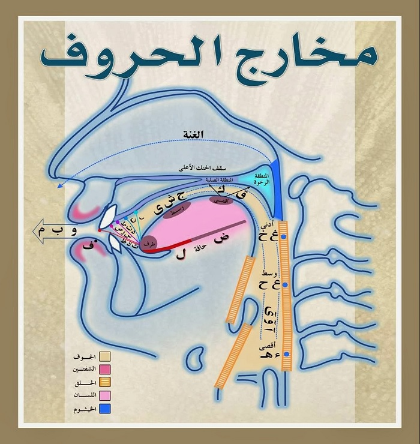
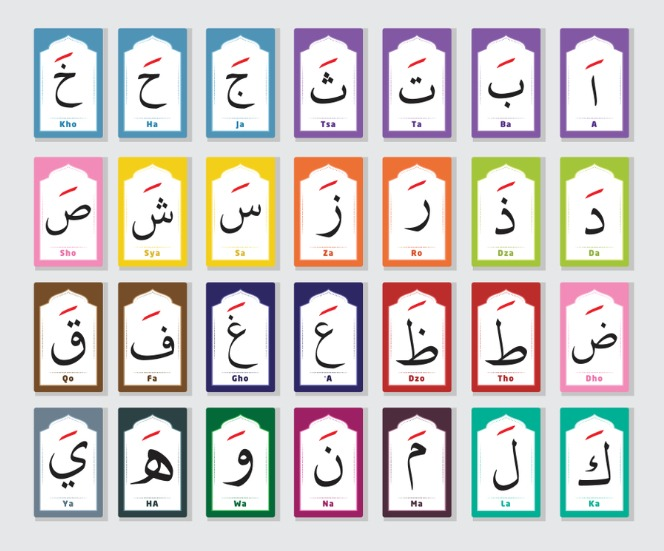
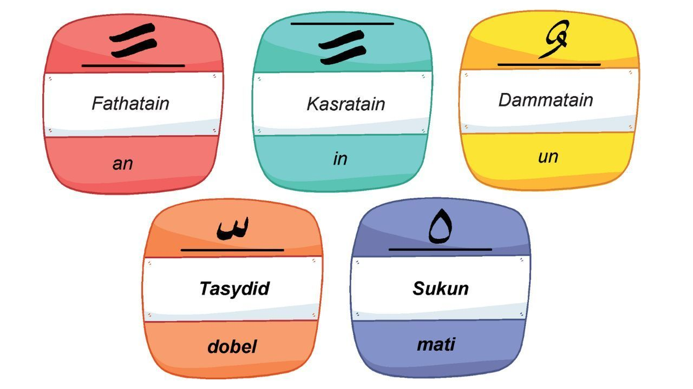

Materi Dasar Belajar Membaca Al-Qur'an
Makhorijul Huruf

Makhorijul huruf merupakan materi dasar yang dipelajari oleh seseorang tentang ilmu tajwid dan membaca Al-Qur'an. Menurut istilahnya, makhorijul huruf adalah beberapa tempat atau letak keluarnya huruf hijaiyah ketika membunyikannya. Belajar mengenai makhorijul huruf ini merupakan salah satu hal yang sangat penting dan harus dipelajari dalam belajar membaca Al-Qur'an karena apabila salah dalam mengucapkan salah satu huruf hijaiyah saja berarti akan menyebabkan berubahnya arti atau makna di dalam Al-Qur'an. Oleh sebab itu, makhorijul huruf ini perlu dipelajari dan menjadi pedoman atau landasan dasar dalam belajar membaca Al-Qur'an.
Pada dasarnya, makhorijul huruf ini dibagi menjadi 5 bagian, diantaranya adalah sebagai berikut:
1. Asy-Syafatain, yaitu tempatnya keluar huruf hijaiyah yang berada di bibir. Adapun huruf hijaiyah yang termasuk kedalam kelompok Asy-Syafatain adalah Fa', Wawu, Ba', dan Mim.
2. Al-Halq, yaitu tempat keluarnya huruf hijaiyah yang terletak pada tenggorokan. Adapun huruf hijaiyah yang termasuk ke dalam kelompok Al-Halq ini ada 6 diantaranya adalah hamzah dan ha'(pangkal tenggorokan), ha dan 'ain (pertengahan tenggorokan), serta ghoin dan kho' (ujung tenggorokan).
3. Al-Lisan, yaitu tempat keluarnya huruf hijaiyah yang terletak pada lidah. Adapun huruf hijaiyah yang termasuk ke dalam kelompok ini diantaranya yaitu dho' (sisi/tepi lidah), qof (pangkal lidah), kaf (pangkal lidah bagian tengah), jim (tengah lidah), syin (tengah lidah), ya' (tengah lidah), lam (ujung tepi lidah), nun' (ujung lidah), ro' (ujung lidah tepat), dal (kulit gusi atas), ta' (kulit gusi atas), tho' (kulit gusi atas), shod (runcing lidah), sin (runcing lidah), za' (runcing lidah), dzo' (gusi), tsa (gusi), dan dzal (gusi).
4. Al-Jauf, yaitu tempat keluarnya huruf hijaiyah yang terletak pada rongga mulut. Adapun huruf yang termasuk dalam kelompok ini adalah alif, wawu, dan ya'
5. Al-Khaisyum, yaitu tempat keluarnya huruf hijaiyah yang terletak pada jalur hidung dengan suara gunnah atau degung. Adapun huruf yang termasuk ke dalam kelompok ini adalah huruf-huruf gunnah mim dan nun yang memiliki ciri-ciri bertasydid baik nun maupun mim, nun yang berharokat sukun yang dibaca idgham bigunnah, iqlab, dan ikhfa' haqiqi, dan mim yang berharokat sukun yang bertemua dengan mim atau ba'.
Sifatul Huruf

Sifatul huruf merupakan tata cara yang jelas mengenai berbagai sifat-sifat yang dimiliki masing-masing huruf hijaiyah. Selain itu, sifatul huruf ini juga dapat diartikan sebagai karakter dari masing-masing huruf hijaiyah. Oleh sebab itu, dapat kita ketahui bahwa masing-masing huruf hijaiyah memiliki karakternya masing-masing menurut ketentuannya.
Namun terdapat suatu perbedaan pandangan mengenai jumlah sifatul huruf ini dari ulama qira'at. Menurut kelompok pertama berpendapat bahwa sifatul huruf berjumlah 14 dengan mengurangi sifat idzlaq, lin, dan menambah sifat ghunnah. Sedangkan pada kelompok yang kedua berpendapat bahwa sifatul huruf berjumlah 16 dimana diikuti oleh As-Syathibi. Sedangkan menurut kelompok ketiga berpendapat bahwa sifatul huruf berjumlah 17 sifat dimana pendapat ini diikuti oleh Al-Jazari. Pendapat selanjutnya menganggap bahwa jumlah sifatul huruf yaitu hingga 24 sifat.
Tajwid

Tajwid merupakan pengeluaran huruf dar tempatnya dengan memberikan sebuah sifat yang ada pada setiap hurufnya. Dengan kata lain, tajwid dapat diartikan sebagai suatu ilmu yang mempelajari tentang bagaimana cara kita dalam mengucapkan berbagai huruf hijaiyah yang tercantum di dalam kitab suci Al-Qur'an. Pada dasarnya, hukum dalam mempelajari ilmu tajwid ini sebenarnya adalah fardhu kifayah dimana dapat diartikan bahwa setidaknya terdapat satu orang yang ada di suatu komunitas/sekelompok orang yang bisa atau memahami betul mengenai ilmu tajwid tersebut. Namun alangkah lebih baiknya kita harus mempelajari ilmu tajwid ini agar dapat membaca Al-Qur'an dengan baik dan benar sehingga tidak mengubah makna yang terkandung di dalam kitab suci Al-Qur'an.
Berikut ini merupakan salah satu contoh hukum tajwid yaitu hukum tajwid yang terjadi pada sukun dan tanwin. Pada dasarnya, hukum tajwid yang ada pada harokat sukun dan tanwid dibagi menjadi beberapa bagian diantaranya adalah sebagai berikut:
1. Idzhar, adalah hukum bacaan tajwid yang terjadi apabila terdapat nun mati atau tanwin yang bertemu dengan huruf-huruf idzhar maka hukumnya wajib dibaca jelas dan terang. Adapun huruf-huruf hijaiyah yang termasuk ke dalam huruf idzhar adalah alif, 'ain, ghoin, ha, kho', ha'
2. Idgham Bigunnah, adalah hukum bacaan tajwid yang terjadi apabila terdapat nun mati atau tanwin yang bertemu dengan huruf-huruf idghan bigunnah seperti ya', nun, mim, dan wawu maka harus dibaca mendengung. Selain itu, idgham bermakna memasukkan dan bigunnah bermakna mendengung sehingga cara membacanya adalah dengan ditasydidkan ke dalam salah satu huruf idgham dengan suara yang mendengung.
3. Idgham Bilagunnah, merupakan hukum bacaan tajwid yang terjadi apabila terdapat huruf nun sukun/mati atau tanwin bertemu dengan huruf idgham bilagunnah yaitu lam dan ro' maka harus dibaca dengan dimasukkan namun tidak berdengung atau dengan kata lain dibaca dengan ditasydidkan ke dalam salah satu huruf idgham dengan suara yang tidak berdengung.
4. Iqlab, adalah hukum bacaan tajwid yang terjadi apabila terdapat huruf iqlab yaitu ba' bertemu dengan nun mati (sukun) atau tanwin maka harus dibaca melebur atau dengan menukar huruf nun mati atau tanwin menjadi huruf mim
5. Ikhfa' Haqiqi, merupakan hukum bacaan tajwid yang terjadi apabila terdapat nun sukun (mati) atau tanwin bertemu dengan huruf-huruf ikhfa haqiqi (ta', tsa', dal, dza, za, sin, syin, shod, dho', tho', dzo, fa', qod, kaf) maka harus dibaca terang dengan dengung.